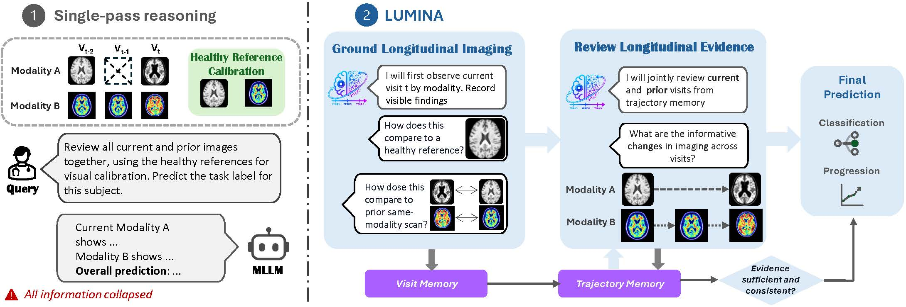
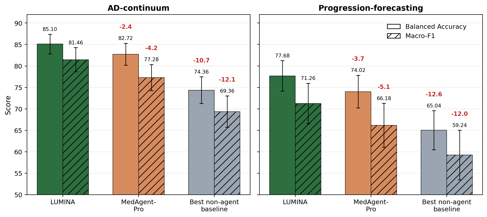
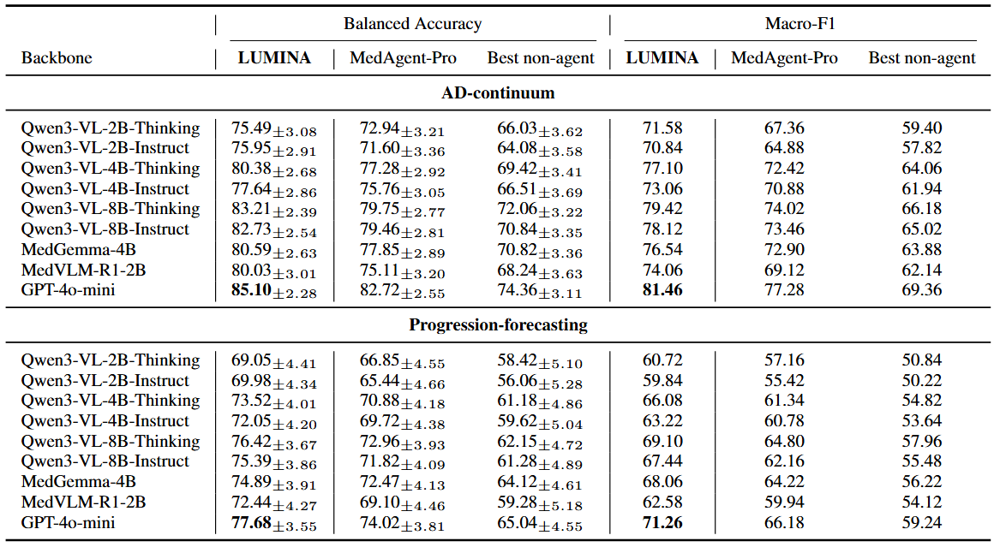
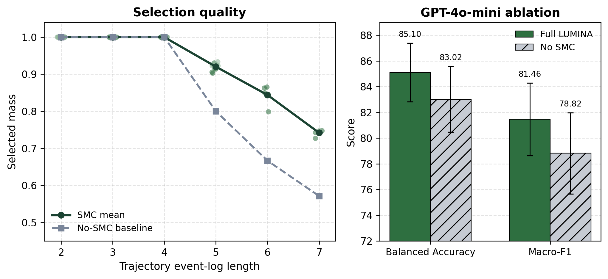

Visit state
Grounded findings and the belief produced for the active visit.
Visit-driven inference · Multi-scale memory · Irregular clinical timelines

View full sizeMultimodal large language models (MLLMs) have shown strong performance in perception and question-answering, but many clinical decisions require reasoning across observations collected over time rather than from a single input. We study this problem in longitudinal modeling, where evidence evolves across visits. We introduce LUMINA (LongitUdinal MultImodal reasoNing Agent), a single-agent framework that incrementally builds an auditable evidence state before making predictions. Instead of predicting directly from all observations, LUMINA organizes current evidence, compares observations across prior visits, maintains longitudinal memory, optionally retrieves relevant cross-subject summaries, and verifies whether the accumulated evidence supports the final decision. We evaluate LUMINA on two subject-level benchmarks: Alzheimer’s disease classification and 36-month progression forecasting from observed visit prefixes. Across nine MLLM backbones, LUMINA consistently outperforms MLLM baselines and an adapted medical reasoning agent, achieving 13.8%--18.5% relative balanced accuracy gains on classification and 16.8%--24.8% gains on progression forecasting over the strongest non-agent baseline. Additional evaluations preserve the same method ordering on Parkinsonian-state classification and breast cancer treatment-response prediction.
Clinical follow-up rarely forms a complete, regularly sampled sequence. LUMINA organizes available scans into temporal visits and updates its state recurrently. A visit can contain any available modality; repeated observations of the same modality establish new visits and become explicit comparison anchors.
 View full size
View full size
Grounded findings and the belief produced for the active visit.
Meaningful changes carried across irregular intervals and modalities.
Comparable cases for retrieval and optional calibration context.
Each visit update returns a structured visit state, subject-change state, trajectory update, diagnostic belief, and compact rationale. The controller can verify and repair inconsistent evidence before committing that state for the next visit.
The main evaluation compares LUMINA with MedAgent-Pro and the strongest non-agent baseline on the same cohort. Results span nine vision-language model backbones and two tasks: AD-continuum classification and progression forecasting.

View full size
View full sizeSequential Monte Carlo selection prioritizes trajectory events as the longitudinal record grows. The ablation evaluates both the quality of selected evidence and the downstream contribution of this component.

View full sizeThe end-to-end runner builds the visit index, optionally creates a population bank, executes the benchmark, and runs the ablation suite.
python scripts/run_full_pipeline.py `
--data-root data `
--model-name Qwen/Qwen3-VL-8B-Thinking `
--alignment-quality strict `
--cohort-sampling balanced_dx `
--output-dir data/results/full_pipeline_run